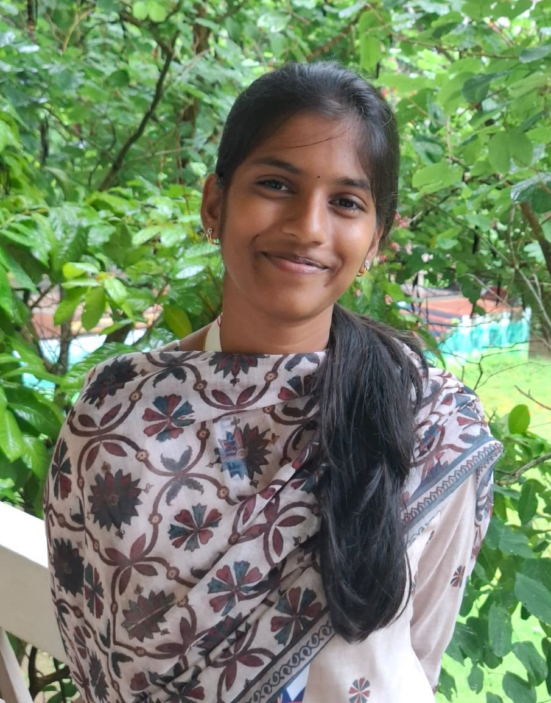

My Story
Hey! Meet Rekha Tanmayee Annabathuni — someone who loves exploring ideas, building creative things, and expressing thoughts through communication.
Currently a 3rd-year student pursuing Artificial Intelligence & Data Science at KIET Group of Institutions, she enjoys experimenting with ideas, learning new technologies, and developing creative projects.
For Rekha, Toastmasters is more than a club — it is a comfort place. KW’s Silver Tongue Toastmasters Club has been her home for growth, confidence, and leadership.
